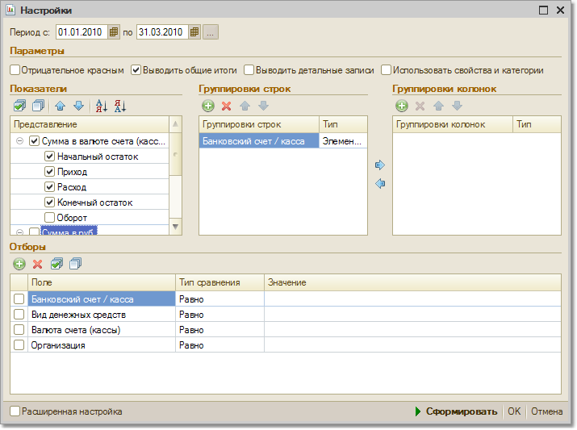

В данном отчете можно получить информацию о движении наличных и безналичных денежных средств за определенный период времени.
В отчете можно отобрать данные по конкретной кассе или банковскому счету.
Можно также сгруппировать отчет по дням с указанием документов, с помощью которых фиксировались наличные или безналичные продажи.
Настройка параметров формирования отчета вызывается по кнопке «Настройка».

Группировки отчета
Показатели